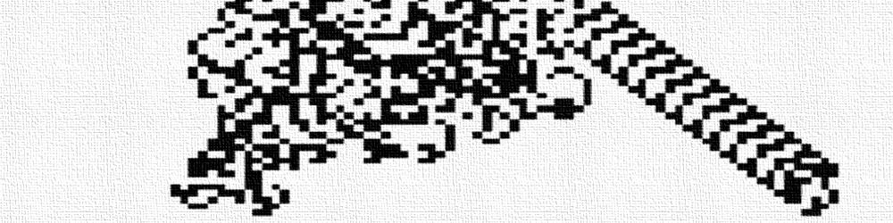
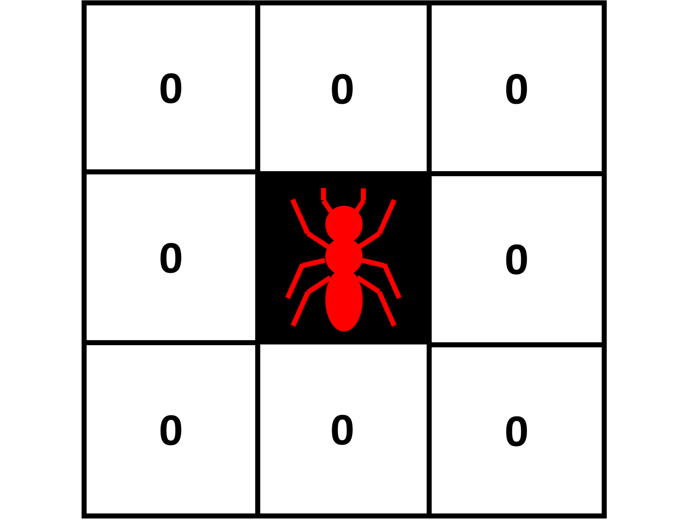
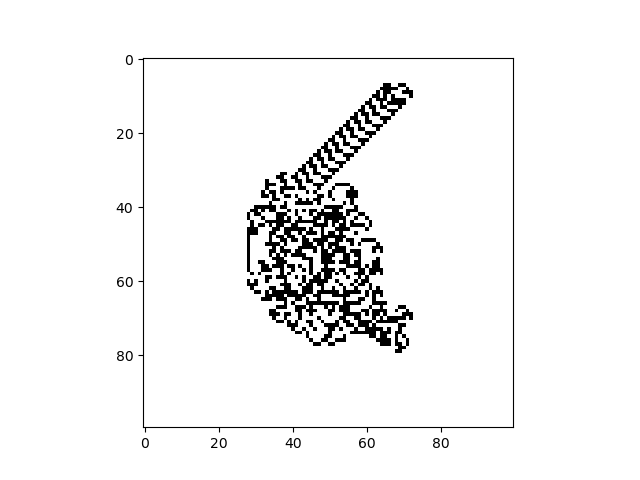
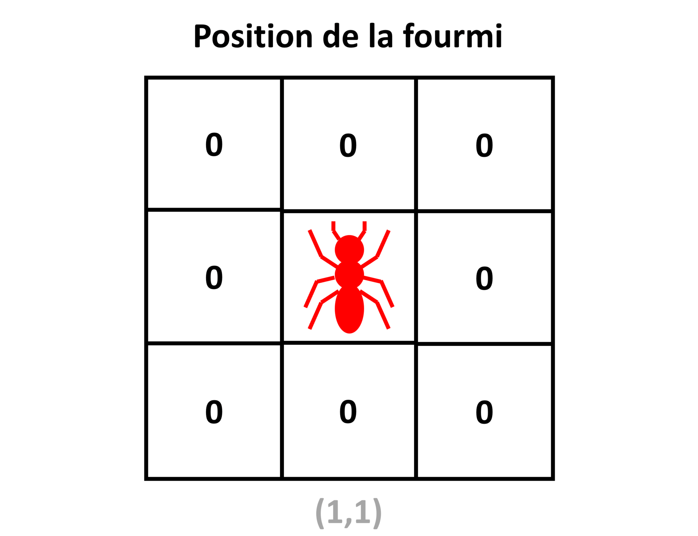
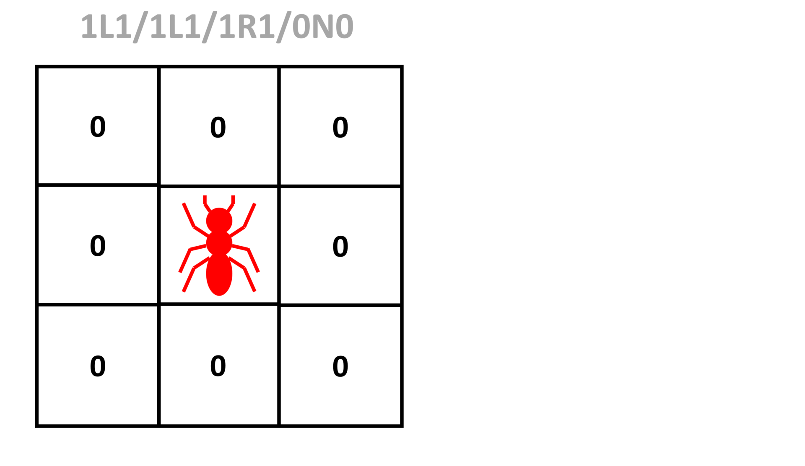
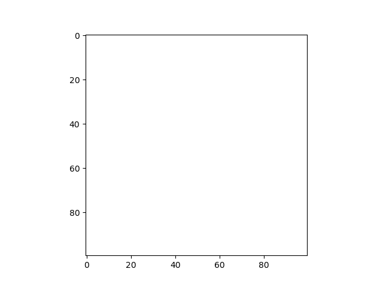

TP 2 : Héritage et polymorphisme

Lors de ce TP, nous allons programmer un automate cellulaire 2D de type "turmite", en complétant petit à petit une classe mère commune à tous les automates cellulaires 2D, puis une classe fille spécifique aux "turmites". En fin de TP, nous réfléchirons à comment nous pourrions améliorer notre programme en s'appuyant sur les méthodes spéciales Python.
Les Turmites
Ce TP portera sur un nouveau type d'automate cellulaire 2D : les turmites.
Leur principe est le suivant : On imagine qu'une fourmi se déplace sur la grille de l'automate, où chaque case contient une valeur 0 ou 1. A chaque itération, la fourmi ne peut se déplacer que d'une case. Suivant les règles de l'automate, la fourmi peut changer ou non de direction, et changer ou non la valeur de la case sur laquelle elle se trouve.
Pour les automates vus aux TP précédents, chaque case pouvait potentiellement changer de valeur à chaque itération. Dans le cas des "turmites", seule la case où se trouve la fourmi peut changer de valeur à une itération donnée.

La "fourmi de Langton" est probablement le "turmite" le plus connu. Imaginé en 1986 par l'informaticien américain Christopher Langton, il est connu pour faire émerger un comportement ordonné et cyclique appelé "la route", après des milliers d'itérations d'un comportement chaotique. Ce comportement fini toujours par apparaitre, qu'importe l'initialisation de la grille.

Depuis, d'autres turmites aux comportements intéressants ont été découverts.
Le nom "turmite" est la contraction de "Turing" et "termite". En effet, les "turmites" sont théoriquement des "machines de Turing" (concept abstrait imaginé par le mathématicien anglais Alan Turing). Et le mot "termite" fait référence à la fourmi de Langton se déplaçant sur la grille.
La fourmi d'un "turmite" est caractérisée par 4 propriétés :
-
Sa position sur la grille (les coordonnées de la case sur laquelle elle se trouve).
-
Son orientation (vers le haut, le bas, la droite, la gauche).
-
La valeur de la case sur laquelle elle se trouve (0 ou 1).
-
L'état interne de la fourmi (0 ou 1).

A chaque itération de l'automate, la fourmi va réaliser les opérations suivantes, dans cet ordre :
-
La fourmi change ou non la valeur de la case sur laquelle elle se trouve, suivant des règles sur son état interne et de l'ancenne valeur de la case.
-
La fourmi change d'orientation ou non, suivant des règles sur son état interne et l'ancienne valeur de la case sur laquelle elle se trouve.
-
La fourmi change d'état interne ou non, suivant des règles sur son état interne et l'ancienne valeur de la case sur laquelle elle se trouve.
-
La fourmi avance d'une case, dans la direction correspondant à son orientation.
On met souvent les règles d'un "turmite" sous la forme d'un tableau. Voici celui de la fourmi de Langton.
| Etat de la fourmi | Valeur de la case | Nouvelle valeur de la case | Rotation de la fourmi | Nouvel état interne de la fourmi |
|---|---|---|---|---|
| 0 | 0 | 1 | R | 0 |
| 0 | 1 | 0 | L | 0 |
| 1 | 0 | 1 | R | 1 |
| 1 | 1 | 0 | L | 1 |
(Pour la rotation, L = vers la gauche, R = vers la droite, U = demi-tour, N = pas de rotation).
Pour désigner rapidement la règle d'un turmite, on peut écrire les différentes lignes de ce tableau, séparées par des slashs. Pour la fourmi de Langton, on parlera de règle '1R0/0L0/1R1/0L1'.
Vérifions si vous avez bien compris. Quelles règles suivra l'automate '1L1/1L1/1R1/0N0' ? Pour vous aider, écrivez le tableau correspondant.

Lors de ce TP, nous allons programmer un automate cellulaire de type "turmite", sous la forme de 2 classes Python : une classe mère commune à tous les automates cellulaires 2D, et une classe fille propre aux automates "turmites", qui héritera de la classe mère.
N'oubliez pas d'importer Numpy et Matplotlib au début de votre programme !
Définition de la classe mère
Nous allons commencer par définir la classe mère cellular_automaton_2D, qui contiendra les attributs et méthodes communs à tous les automates cellulaires 2D.
Pour définir un automate cellulaire en particulier, il suffira de définir une classe fille héritant de cette classe mère, sans avoir besoin de tout réécrire.
Voici la structure de la classe mère que nous allons programmer :
class cellular_automaton_2D:
def __init__(self,grid_size_x,grid_size_y):
#Complétez ici
def set_grid(self,grid):
#Complétez ici
def get_grid(self):
#Complétez ici
def set_rules(self):
#Complétez ici
def get_rules(self):
#Complétez ici
def get_iteration(self):
#Complétez ici
def iterate_grid(self):
#Complétez ici
def display_grid(self):
plt.figure()
plt.imshow(self.grid,cmap='binary')
plt.show()
def save_grid(self):
plt.figure()
plt.imshow(self.grid,cmap='binary')
plt.savefig('automaton_'+str(self.iteration)+'.png')
plt.close()
Cette structure doit vous dire quelque chose : elle ressemble beaucoup à celle de la classe programmée lors du TP précédent.
Vous devrez compléter petit à petit les méthodes de cette classe.
Constructeur
Pour commencer, complétez le constructeur :
def __init__(self,grid_size_x,grid_size_y):
#Complétez ici
Il prendra en entrée 2 entiers grid_size_x et grid_size_y contenant les dimensions de la grille de l'automate.
Il initialisera 2 attributs d'instance de la manière suivante :
-
griden utilisant une méthode set_grid, qui prendra en entrée une matrice Numpy 2D ne contenant que des 0 de dimensionsgrid_size_xetgrid_size_y, et que nous programmerons plus tard. -
iterationdirectement initialisé à 0, et qui nous servira à suivre le nombre d'itération pour lequel a tourné l'automate depuis son initialisation.
Quelle ligne de commande utiliseriez-vous pour créer un automate cellulaire 2D quelconque de dimensions 100x100 ?
Getters
Nous allons à présent compléter les "getters".
Complétez la méthode get_grid suivante :
def get_grid(self):
#Complétez ici
Elle devra retourner une copie Numpy de l'attribut d'instance grid.
Cet attribut contiendra la grille de l'automate cellulaire.
Complétez la méthode get_rules suivante :
def get_rules(self):
#Complétez ici
Cette méthode n'ayant pas de sens tant que le type exact d'automate (et donc de règle) n'est pas connu, elle ne sera donc pas implémentée tout de suite. Mais il s'agit d'une méthode nécessaire à tout automate cellulaire 2D, et devra donc être définie spécifiquement dans chaque classe fille.
Différentes classes filles pourront donc avoir différentes implémentations de get_rules : c'est le principe du polymorphisme.
La méthode get_rules renverra donc juste un message d'erreur de type NotImplementedError.
Complétez la méthode get_iteration suivante :
def get_iteration(self):
#Complétez ici
Elle devra retourner l'attribut d'instance iteration.
Cet attribut contiendra le nombre d'itérations effectuées par l'automate depuis son initialisation.
Setters
Nous allons à présent compléter les "setters".
Complétez la méthode set_grid suivante :
def set_grid(self,grid):
#Complétez ici
Elle prendra en entrée une matrice 2D Numpy grid, et affectera une copie Numpy de cette matrice à l'attribut d'instance grid.
Ainsi, cette méthode permettra de mettre à jour l'attribut grid de l'automate avec une nouvelle grille.
def set_rules(self):
#Complétez ici
Tout comme pour get_rules, cette fonction est nécessaire à tout automate cellulaire 2D, mais doit être définie spécifiquement pour chaque type d'automate.
Elle renverra donc juste un message d'erreur de type NotImplementedError.
Itération de l'automate
Les automates cellulaires étant des algorithmes itératifs, tout automate cellulaire 2D a besoin d'une méthode pour être itéré. Cependant, le contenu exact de la méthode va dépendre du type d'automate que nous cherchons à implémenter.
Une fois de plus, nous allons donc définir un patron de méthode, qui devra être adapté dans les différentes classes filles.
Complétez la méthode iterate_grid suivante :
def iterate_grid(self):
#Complétez ici
Elle renverra juste un message d'erreur de type NotImplementedError.
Affichage et export
Ajoutez les méthodes suivantes à votre classe mère :
def display_grid(self):
plt.figure()
plt.imshow(self.grid,cmap='binary')
plt.show()
def save_grid(self):
plt.figure()
plt.imshow(self.grid,cmap='binary')
plt.savefig('automaton_'+str(self.iteration)+'.png')
plt.close()
La méthode display_grid servira à afficher l'état de la grille de l'automate à l'itération actuelle, sous la forme d'une image en noir et blanc (un pixel noir correspond à une case 1, un pixel blanc à une case 0).
La méthode save_grid servira à enregistrer une telle image de l'état de la grille de l'automate à l'itération actuelle, au format PNG.
Ces méthodes étant utiles pour tous les types d'automates cellulaires 2D, elles sont dans la classe mère.
Définition de la classe fille
Maintenant que nous avons définit les attributs et méthodes communs à tous les automates cellulaires 2D, nous pouvons définir une classe fille turmite, qui va hériter de ces méthodes et attributs.
Voici la structure de la classe fille que nous allons programmer :
class turmite(cellular_automaton_2D):
def __init__(self,grid_size_x,grid_size_y,rules_code,state,pos_x,pos_y,orientation):
#Complétez ici
def set_rules(self,rules_code):
#Complétez ici
def get_rules(self):
#Complétez ici
def set_state(self,state):
#Complétez ici
def get_state(self):
#Complétez ici
def set_position(self,pos_x,pos_y):
#Complétez ici
def get_position(self):
#Complétez ici
def set_value(self,value):
#Complétez ici
def get_value(self):
#Complétez ici
def set_orientation(self,orientation):
#Complétez ici
def get_orientation(self):
#Complétez ici
def __turn(self,direction):
#Complétez ici
def __move(self):
#Complétez ici
def iterate_grid(self,nb_iterations):
#Complétez ici
Comment avons-nous indiqué à Python que la classe turmite hérite de la classe cellular_automaton_2D ?
Vérifions si vous avez compris le concept d'héritage : comment feriez-vous pour récupérer le nombre d'itérations d'une instance ant de turmite ?
Vous devriez remarquer que certaines des méthodes "non implémentées" que nous avions définies dans la classe mère seront redéfinies dans la classe fille. Une autre classe fille pourra également redéfinir ces méthodes d'une autre manière : c'est le principe du polymorphisme.
Vous devriez également remarquer que 2 des méthodes sont privées. Elles n'auront donc pas vocation à être appelées de l'extérieur.
Avez-vous repéré quelles méthodes sont privées ? Comment savez-vous que ces méthodes sont privées ?
Vous devrez compléter petit à petit les méthodes de cette classe.
Constructeur
Pour commencer, complétez le constructeur :
def __init__(self,grid_size_x,grid_size_y,rules_code,state,pos_x,pos_y,orientation):
#Complétez ici
Elle prendra en entrée 2 entiers grid_size_x et grid_size_y contenant les dimensions de la grille de l'automate, une chaîne de caractères rules_code contenant les règles du "turmite", un entier state contenant l'état initial de la fourmi, 2 entiers pos_x et pos_y contenant la position initial de la fourmi sur la grille, et une chaîne de caractère orientation contenant l'orientation initiale de la fourmi ('up', 'down', 'right', 'left').
Elle appellera le constructeur de la classe mère avec les entrées grid_size_x et grid_size_y.
Ensuite, elle initialisera 4 attributs d'instance de la manière suivante :
-
rulesen utilisant une méthodeset_rules, qui prendra en entréerules_code, et que nous définirons plus tard. -
stateen utilisant une méthodeset_state, qui prendra en entréestate, et que nous définirons plus tard. -
positionen utilisant une méthodeset_position, qui prendra en entréepos_xetpos_y, et que nous définirons plus tard. -
orientationen utilisant une méthodeset_orientation, qui prendra en entréeorientation, et que nous définirons plus tard.
| Aide |
|---|
Pour appeler le constructeur de la classe mère dans la classe fille, on utilise super().__init__(), avec les entrées nécessaires pour créer une instance de la classe mère. |
Quelle ligne de commande Python utiliseriez-vous pour créer une fourmi de Langton, avec une grille 100x100, les un état initial à 0, une position initiale à (0,0) et une orientation 'up'?
Getters
Nous allons à présent compléter les "getters".
Complétez la méthode get_rules suivante :
def get_rules(self):
#Complétez ici
Elle devra retourner l'attribut d'instance rules.
Cet attribut contiendra les règles de l'automate cellulaire.
Complétez la méthode get_state suivante :
def get_state(self):
#Complétez ici
Elle devra retourner l'attribut d'instance state.
Cet attribut contiendra l'état de la fourmi.
Complétez la méthode get_position suivante :
def get_position(self):
#Complétez ici
Elle devra retourner l'attribut d'instance position.
Cet attribut contiendra la position de la fourmi sur la grille de l'automate.
Complétez la méthode get_value suivante :
def get_value(self):
#Complétez ici
Elle devra retourner la valeur de la case de la grille sur laquelle se trouve la fourmi.
Complétez la méthode get_orientation suivante :
def get_orientation(self):
#Complétez ici
Elle devra retourner l'attribut d'instance orientation.
Cet attribut contiendra l'orientation de la fourmi.
Setters
Nous allons à présent compléter les "setters".
Complétez la méthode set_rules suivante :
def set_rules(self,rules_code):
#Complétez ici
Elle prendra en entrée une chaîne de caractères rules_code contenant la définition des règles de l'automate au format décrit plus tôt.
Elle affectera à l'attribut d'instance rules une liste de liste, chaque liste contenant les 3 éléments entre slashs de la règle.
Par exemple, pour la fourmi de Langton, on obtiendra : [[1,'R',0],[0,'L',0],[1,'R',1],[0,'L',1]].
Complétez la méthode set_state suivante :
def set_state(self,state):
#Complétez ici
Elle prendra en entrée un entier 0 ou 1 state, et affectera cette valeur à l'attribut d'instance state.
Ainsi, cette méthode permettra de mettre à jour l'état de la fourmi.
Complétez la méthode set_position suivante :
def set_position(self,pos_x,pos_y):
#Complétez ici
Elle prendra en entrée 2 entiers pos_x et pos_y, et affectera un tuple contenant pos_x et pos_y à l'attribut d'instance position.
Ainsi, la méthode permettra de mettre à jour la position de la fourmi sur la grille de l'automate.
Complétez la méthode set_value suivante :
def set_value(self,value):
#Complétez ici
Elle prendra en entrée un entier 0 ou 1 value, et affectera cette valeur à la case de la grille sur laquelle se trouve la fourmi.
Ainsi, la méthode permettra de mettre à jour la valeur de la case sur laquelle se trouve la fourmi.
Complétez la méthode set_orientation suivante :
def set_orientation(self,orientation):
#Complétez ici
Elle prendra en entrée une chaîne de caractères orientation contenant 'up', 'down', 'left' ou 'right', et affectera cette chaîne de caractères à l'attribut d'instance orientation.
Ainsi, la méthode permettra de mettre à jour l'orientation de la fourmi.
Méthodes privées
Comme nous l'avions remarqué précédemment, notre classe fille turmite aura 2 méthodes privées __turn et __move.
Ces méthodes serviront respectivement à faire tourner et avancer la fourmi.
Elles n'auront pas vocation à être appelées de l'extérieur de la classe, mais par la méthode d'itération du "turmite". D'où le fait qu'elles soient privées : nous ne voulons pas qu'un utilisateur fasse tourner ou bouger la fourmi par erreur en dehors des itérations de l'automate.
Complétez la méthode __turn suivante :
def __turn(self,direction):
#Complétez ici
Elle prendra en entrée une chaîne de caractères direction, contenant 'R', 'L', 'U' ou 'N', indiquant respectivement si la fourmi doit tourner à droite, à gauche, faire demi-tour ou garder son orientation actuelle.
Elle modifiera l'attribut d'instance orientation par une nouvelle chaîne de caractère 'up', 'down', 'left' ou 'right', correspondant à la nouvelle orientation de la fourmi après changement d'orientation.
Par exemple, une fourmi à l'orientation 'left' à laquelle on applique __turn avec l'entrée 'R' au la nouvelle orientation 'up'.
Vérifions si vous avez bien compris le principe : si j'applique __turn à une foumi qui a l'orientation 'up', avec comme entrée 'U', quelle sera sa nouvelle orientation ?
Complétez la méthode __move suivante :
def __move(self):
#Complétez ici
Elle modifiera l'attribut d'instance position, pour déplacer la fourmi d'une case dans la direction de son orientation : en haut si 'up', en bas si 'down', à gauche si 'left', à droite si 'right'.
Itération de l'automate
Nous allons à présent programmer la méthode qui permettra d'itérer un "turmite" un nombre donné de fois. L'idée sera d'appeler dans cette méthode d'autres méthodes programmées précédemment.
Complétez donc la méthode iterate_grid suivante :
def iterate_grid(self,nb_iterations):
#Complétez ici
Pour le nombre entier d'itérations nb_iterations donné en entrée, elle appliquera les règles du "turmite" (stockées dans l'attribut d'instance rules) à la fourmi et la case de la grille sur laquelle elle se trouve.
Pour chaque itération, on incrémentera de 1 l'attribut d'instance iteration.
Voyons si vous avez tout compris :
Comment feriez-vous pour itérer 10 fois une instance de "turmite" ant ?
Instanciation et simulation
Ça y est, votre automate cellulaire "turmite" est prêt à tourner !
Faites tourner la "Fourmi de Langton" (règle '1R0/0L0/1R1/0L1') pour 11500 itérations, sur une grille 100x100 avec la fourmi initialisée au centre, la fourmi étant dans l'état initial 0, et orientée 'up'. Enregistrez une image PNG de la grille de l'automate toutes les 100 itérations.
Si vous regardez les images PNG obtenues, vous devriez voir un comportement similaire à celui-ci :

Après des milliers d'itérations de déplacement chaotique, le fameux comportement émergent appelé "route" apparait clairement.
Mais il existe bien d'autres "turmites" au comportement intéressant. Voici quelques exemples que vous pouvez essayer :
| Nom de l'automate | Règles |
|---|---|
| Fourmi de Langton | 1R0/0L0/1R1/0L1 |
| Fibonacci | 1L1/1L1/1R1/0N0 |
| Worm trails | 1R1/1L1/1R1/0R0 |
| Snowflake | 0R1/1R1/1L1/1L0 |
| Contoured island | 0R1/0N1/1R1/1L0 |
| Balloon bursting | 1L0/1R1/0R1/1L0 |
Vers les méthodes spéciales
Lors de ce TP, nous avons définit un automate cellulaire "turmite" ne faisant se déplacer qu'une seule fourmi sur la grille.
Imaginons à présent que nous voulions programmer un automate cellulaire "turmite" contenant plusieurs foumis se déplaçant sur une même grille. Comment pourrions adapter le programme que nous venons de réaliser ?
Pour commencer, nous pourrions définir une classe ant, contenant les attributs et méthodes propres à une fourmi.
Ensuite, une autre classe colony, servirait de conteneur à fourmis (instances de la classe ant), comme une "colonie de fourmis".
Enfin, la classe turmite serait initialisée avec une instance de colony.
Ouvrez un nouveau fichier Python, et essayer de compléter les classes suivantes et vous basant sur votre programme précédemment :
class cellular_automaton_2D:
#Complétez ici
class turmite(cellular_automaton_2D):
#Complétez ici
class colony():
#Complétez ici
class ant():
#Complétez ici
La classe colony devra permettre d'ajouter / retirer des fourmis au conteneur avec les opérateur + et -, d'obtenir le nombre de fourmis contenus avec la méthode len, et d'itérer sur les fourmis d'une colonie.
Pour faire ceci, vous aurez besoin d'un concept nouveau : les méthodes spéciales Python.
Comment définit-on une méthode spéciale en Python ?
Vous pouvez tester votre nouvelle implémentation sur les mêmes exemples de "turmites" que précédemment.
Bravo ! Vous avez compris les notions d'héritage et de polymorphisme. Lors des TP suivants, nous programmerons un nouveau type d'automates cellulaire, pour lequel nous aurons besoin de méthodes spéciales Python.